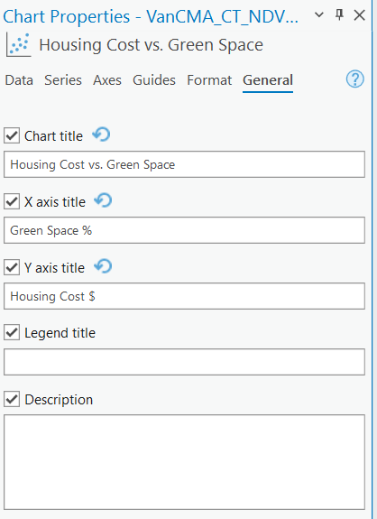

Table of contents
Insert a Layout
Add a layout to your map. Choose the 8.5”:” x 11” Letter size, in the Landscape orientation. Your task is to create a layout with a Map showing Mean NDVI by DA along side a Chart showing the relationship between Income and Green Veg Fraction.
Adding a Chart to the Layout
Arc allows you to add charts to your layout in addition to maps.
Change the Chart Title
In the chart properties pane, under general, you can change the title of the chart so it is more concise and fits on the layout better.

Resize Items and Set Map Scale
Resize the map and chart so the map is a bit bigger than the chart. Then set the map scale to 1:100,000 and add the scale to the map.
Add Other Map Elements
Add all the appropriate map elements: Title, Legend, North Arrow, and Source Statement. You can reference previous Modules for a refresher on how to do this.
- For the Data Source in you Name/Source Statement, list Stats Canada and Google Earth Engine as the data sources
- Your final map should look something like shown below.
- The chart should show the relationship between green vegetation area and income. The map should show mean NDVI value by DA.
- This map is just a rough guide, feel free to make your own stylistic choices to improve on it. Your values should look a bit different, so don’t be concerned if the numbers don’t match perfectly!